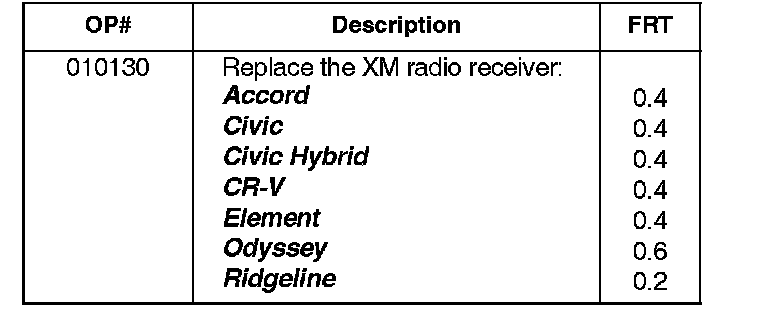

Satellite Radio - XM Stations Displayed/No XM Audio
10-024June 11, 2010
Applies To:
See VEHICLES AFFECTED
No XM Sound, But XM Station Information Is Displayed
SYMPTOM
The sound from the XM radio cuts out or disappears, but the audio unit continues to display the XM station information. The sound returns after the ignition switch is turned to LOCK (0), then back to ACC (I) or ON (II).
PROBABLE CAUSE
There is an internal problem with the XM receiver.
VEHICLES AFFECTED
All of the following models with XM radio:
2008-09 Accord
2007-09 Civic
2007-09 Civic Hybrid
2007-09 CR-V
2008-09 Element
2008-09 Odyssey
2009 Ridgeline
CORRECTIVE ACTION
Replace the XM receiver with an updated part.
PARTS INFORMATION
Accord: P/N 39820-TA0-AO1
Civic:
2007-08: P/N 39820-SNA-AO1
2009: P/N 39820-SNA-A02
Civic Hybrid:
2007-08: P/N 39820-SNA-AO1
2009: P/N 39820-SNA-A02
CR-V: P/N 39820-SWA-A01
Element:
2008-09 without navigation: P/N 39820-SCV-A71
2009 with navigation: P/N 39820-SCV-A81
Odyssey: P/N 39820-SHJ-A11
Ridgeline: P/N 39820-SJC-A11
WARRANTY CLAIM INFORMATION

The normal warranty applies.
Failed Part: P/N 39820-TAO-AO1
Defect Code: 03214
Symptom Code: 03257
Skill Level: Repair Technician
REPAIR PROCEDURE
Replace the XM receiver:
^ Refer to the Audio section of the appropriate service manual, or
^ Online, under Search by Vehicle, enter keywords
REMOVE XM and select the applicable XM
Removal/Installation instructions from the list.

Disclaimer